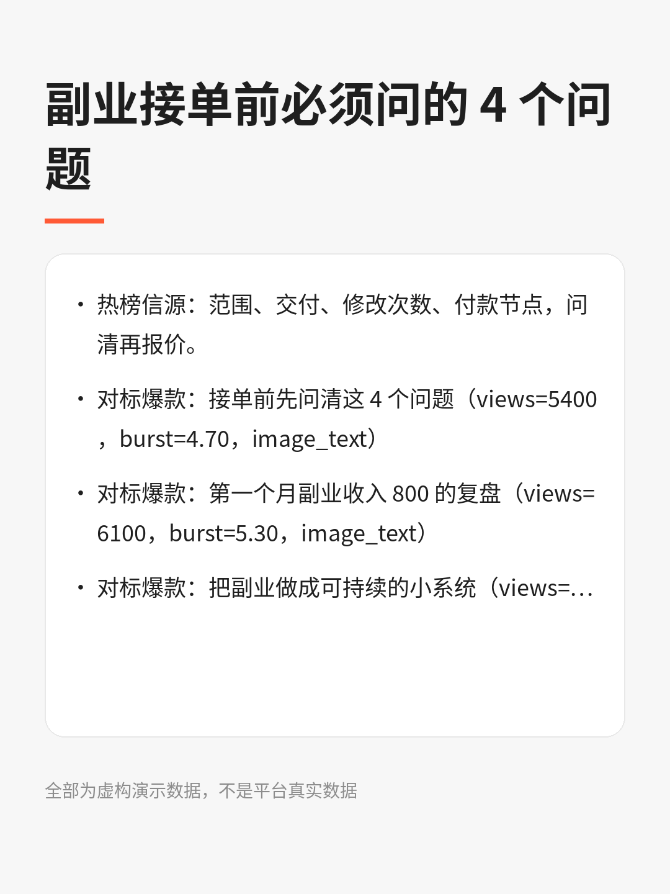

video default
1080×1920 · 17.0s · 153.6 KB
artifacts/video/assets/video.mp4
wb 命令。素材是 demo 里真实渲染出的 PNG / MP4，路径指向站点内的静态副本。
海报 / 图文 / 视频都从 WB_HOME 读取；缩略图走 /files/<相对路径>，不暴露 WB_HOME 之外的文件。
1080×1920 · 17.0s · 153.6 KB
artifacts/video/assets/video.mp4

1080×1440 · 128.9 KB
artifacts/visual/assets/poster-checklist.png